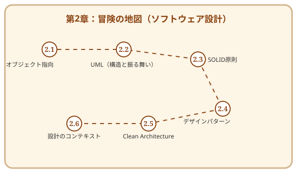

第1章で「何を作るか」という地図を手に入れたあなたは、次に「いかに作るか」という建物の設計図を描く必要があります。
良い設計は、時の試練に耐え、変化し続ける要求に対しても柔軟に応えることができます。逆に、その場しのぎの設計は、後に巨大な「技術的負債」という魔物となってあなたの冒険を阻むことでしょう。
この章では、ソフトウェア設計（Software Design）の普遍的な知恵を学びます。オブジェクト指向という魔法の源泉から、美しく堅牢な構造を築くための黄金律（SOLID）、そしてそれらを守り抜くためのクリーンアーキテクチャまで——悠久の時を経て磨かれた設計の極意を身につけましょう。

この章を読み終えると、あなたは以下のことができるようになります。
アーキテクチャという「悠久の城」を築く旅を始めましょう。